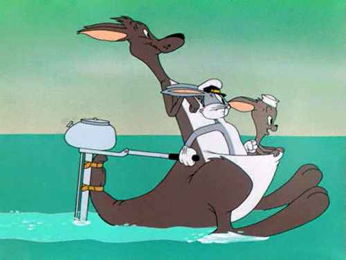
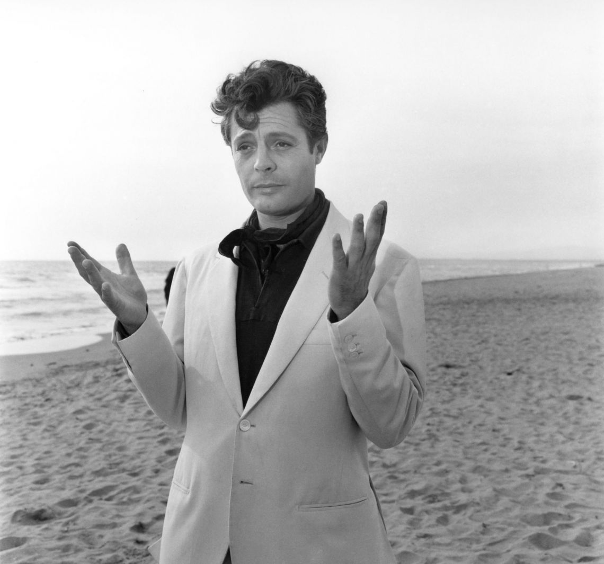
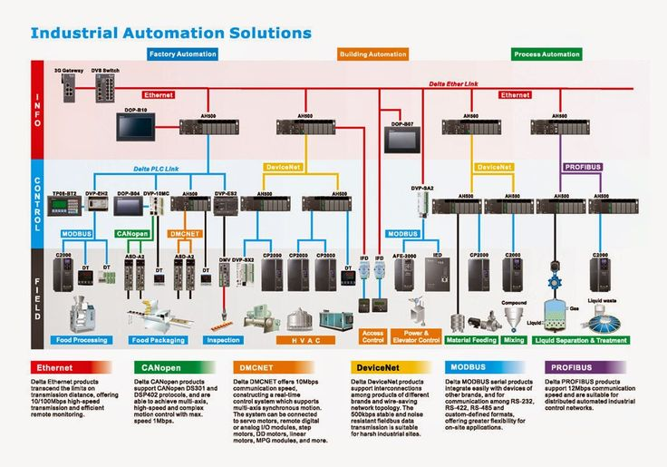
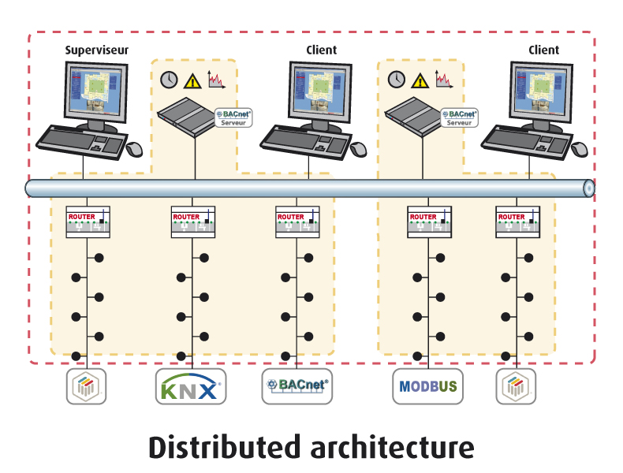
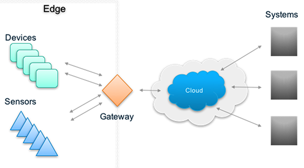
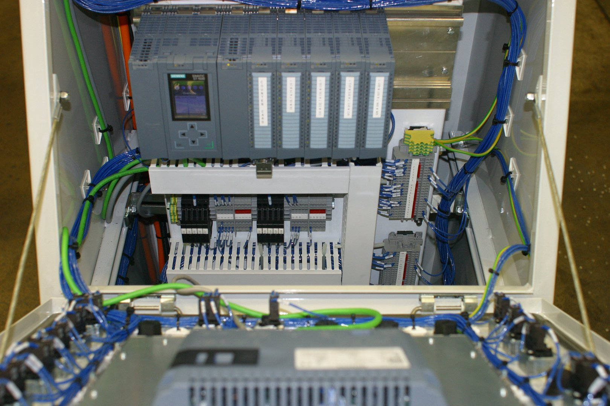
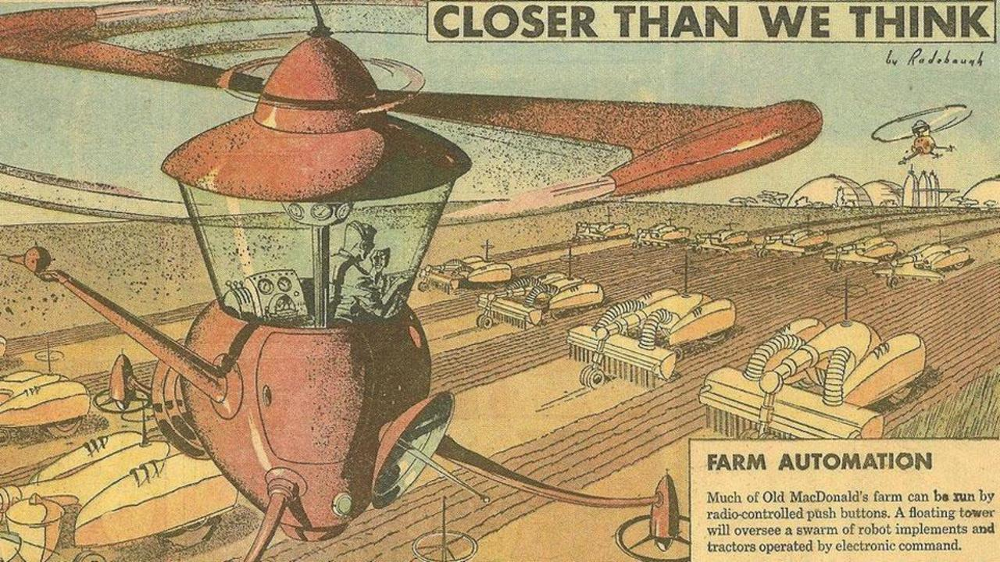
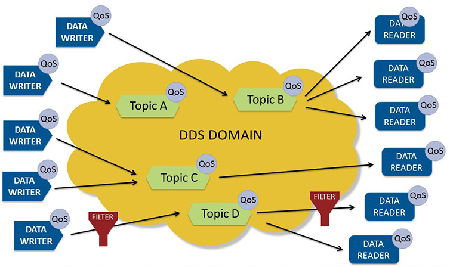
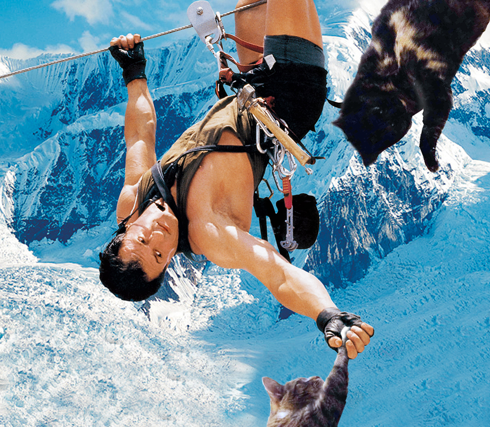

Antonio Almeida and Jaime González-Arintero
June 14, 2017





-MIT Technology Review, 2014
By 2020, component costs will have come down to the point that connectivity will become standard feature, even for processors costing less than $1.
- Peter Middleton, Gartner
tools.ietf.org/html/rfc7228
"A computer network consisting of a worldwide network of computer networks that use the TCP/IP network protocols to facilitate data transmission and exchange."



devices != gateways
Message Queue Telemetry Transport
"Publish-subscribe-based "lightweight" messaging protocol, for use on top of the TCP/IP protocol."


home/groundfloor/kitchen/temperatureoffice/conferenceroom/luminancehome/groundfloor/+/temperaturehome/groundfloor/#

There are client libraries and wrappers for practically all languages used in M2M setups, as well as different brokers/servers.
Constrained Application Protocol
"A specialized web transfer protocol for use with constrained nodes and constrained networks in the Internet of Things."


.well-known/core


coap.technologytools.ietf.org/html/rfc7252github.com/mkovatsc/Copper

"Industrial, digital bus used for real-time distributed control."


"IO-Link is the first standardised IO technology worldwide (IEC 61131-9) for the communication with sensors and actuators. IO-Link is no fieldbus but the further development of the existing, tried-and-tested connection technology."





